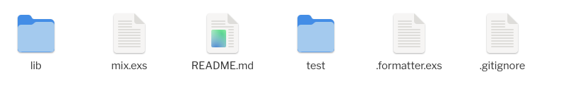

mixmixmixmix es una herramienta de línea de comandos
para:
Está incluida en el entorno de desarrollo Elixir.
mix tiene una funcionalidad similar a:
Para crear un nuevo proyecto:
mix new nombre_proyectoGenera un directorio con el nombre_proyecto dado,
con un esqueleto para el proyecto.
Contenidos del directorio:

mixlib
.ex con el código fuente Elixir del proyecto.
test
.exs con casos de prueba unitarios.
mix.exs
_build
.beam resultantes de compilar el proyecto y sus
dependencias
deps
.formatter.exs
Otros directorios:
config
Application.fetch_env/2.
priv
:code.priv_dir/1.
mixUna vez situados en el directorio del proyecto, podemos utilizar los
siguientes comandos de mix:
mix compile
iex -S mix
Abre un intérprete de línea de comandos Elixir. Desde este intérprete pueden accederse a las funciones de los módulos del proyecto.
Utilizar el comando recompile cada vez que se hagan
cambios en el código fuente.
mix test
test/mix format
Formatea el código fuente, siguiendo las convenciones habituales de código Elixir.
Puede configurarse a través del fichero
.formatter.exs
mix clean
.beam procedentes de la
compilación.hexHex es un gestor de paquetes destinado a los lenguajes de la máquina BEAM.
mix.El repositorio hex.pm contiene más de 20000 paquetes disponibles.
Basta con indicar las librerías a incorporar en la función
deps/0 del fichero mix.exs. Por ejemplo:
La especificación de versión ~> 3.2 significa «igual
o posterior a la versión 3.2.x, pero anterior a la versión
4.0».
Especificación de versiones: [+]
Una vez añadidas las librerías al fichero mix.exs,
se descargan mediante el comando deps.get de
mix:
> mix deps.get
Resolving Hex dependencies...
Resolution completed in 0.02s
New:
csv 3.2.1
* Getting csv (Hex package)Las librerías se compilarán la próxima vez que se compile el
proyecto. Si se desea forzar la compilación, puede utilizarse el comando
deps.compile de mix.
Para llamar a una función de otro módulo (ya sea del mismo proyecto o de una dependencia), basta con indicar el nombre del módulo en el momento de la llamada.
def leer_csv() do
File.stream!("mi_fichero.csv") File: módulo de librería estándar
|> CSV.decode!(headers: true) CSV: Módulo de dependencia externa (csv)
endExcepción: llamadas a macros definidas en otros módulos
Sin embargo, hay directivas en Elixir que facilitan el uso de módulos:
aliasrequireimportuseMás información: [+]
aliasalias con módulos
anidadosalias es útil cuando accedemos a funciones
en módulos anidados.
requireComo ya hemos visto, en Elixir podemos utilizar cualquier función haciendo referencia a su módulo, sin necesidad de importarlo previamente.
Sin embargo, para utilizar una macro es
necesario indicar (mediante require) el módulo al que
pertenece.
importEs preferible no abusar de import para que sea
explícito el módulo del cual provienen las funciones a las que
llamamos.
Como alternativa, es posible restringir la importación a algunas funciones de un módulo:
También es posible importar todas las funciones, excepto las que indiquemos explícitamente:
Esto es útil, a veces, para ocultar algunas de las funciones predefinidas.
Kernel, que se
importa automáticamente.useCuando utilizamos use, el Modulo
indicado puede inyectar código en nuestro módulo.
import, directivas alias, funciones, etc.Útil cuando se utilizan frameworks.
use sobre él para utilizarlo.exdoc)exdocExdoc es una herramienta que permite generar documentación en formato HTML para nuestros proyectos.
La documentación generada tiene un formato similar a la documentación de la librería estándar de Elixir.
exdoc en nuestro proyectoBasta con añadir la dependencia correspondiente a la función
deps/0 definida en el fichero mix.exs.
'only: dev' significa que solamente se hará uso de
esta librería en entornos de desarrollo (no en entornos de
testing ni de producción).
'runtime: false' significa que no formará parte de
nuestra aplicación cuando se ejecute (ya que solamente sirve para
desarrollo).
@moduledoc y
@docLa documentación se genera ejecutando mix docs en el
directorio del proyecto.
> mix docs
Generating docs...
View "html" docs at "doc/index.html"
View "epub" docs at "doc/mi_proyecto.epub"iex:Estos pequeños ejemplos de iex pueden ser utilizados
como casos de prueba.
Más información: Doctests.